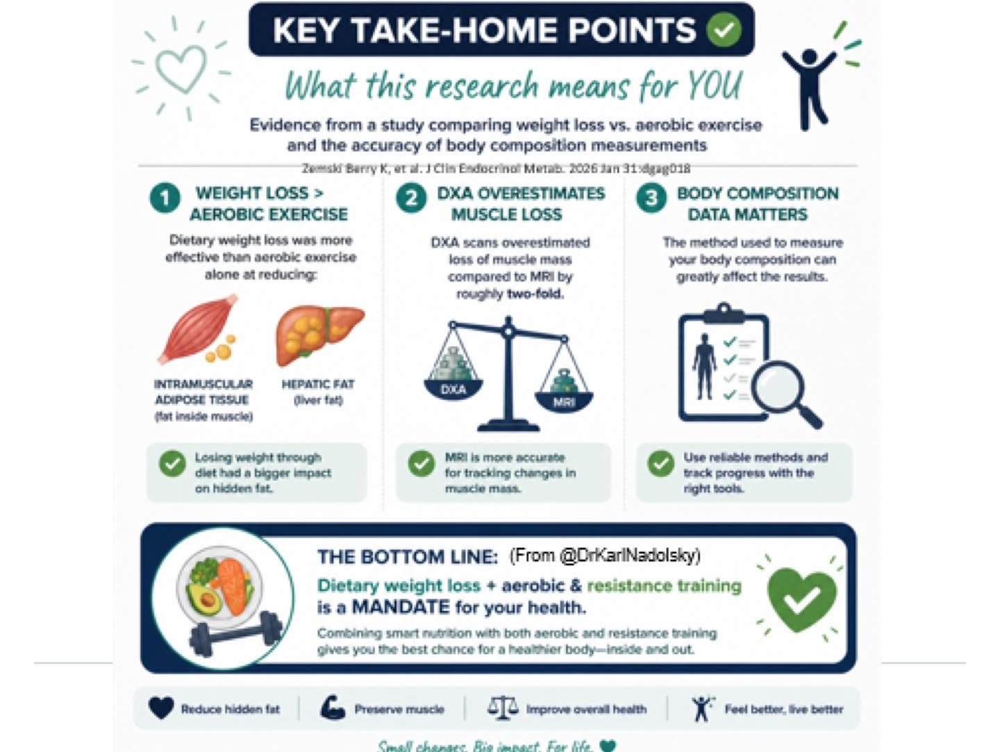

Weight loss is extremely effective at reducing liver fat, and thus improving insulin sensitivity. Even more so than aerobic exercise.
In this study, a 10% drop in bodyweight cut liver fat by 33% and improved insulin sensitivity by 40%.
Louis shares Karl Nadolsky's summary of a study showing 10% weight loss lowered liver fat by about 33% and intramuscular fat by about 13%, and improved insulin sensitivity by about 40%. Exercise alone improved fitness and insulin sensitivity but did not significantly reduce liver or muscle fat.
Weight loss is extremely effective at reducing liver fat, and thus improving insulin sensitivity. Even more so than aerobic exercise.
In this study, a 10% drop in bodyweight cut liver fat by 33% and improved insulin sensitivity by 40%.
🎯 Bottom line from this study: Losing weight reduces harmful fat in your liver and muscle. Even if you lose a little "lean" or "fat-free" mass, your muscle actually becomes healthier. Exercise alone helps, but combining both is the real win.
🧠 What this study found:
🔻 Liver fat dropped ~33%
🔻 “Fat inside muscle” dropped ~13%
🔻 Body weight dropped ~10%
🔼 Insulin sensitivity improved ~40%💪 What about muscle?
➡️some lean mass decreased
BUT:
👉 Fat inside muscle dropped MORE than muscle itself
➡️ Net effect = better muscle quality🏃 Exercise alone (without weight loss):
👍 Improved fitness & insulin sensitivity
❌ Did NOT significantly reduce liver fat or fat in muscle
⚖️ Key takeaway:👉 Weight loss > exercise alone for reducing harmful fat (liver + muscle)
👉 Best approach = BOTH
#WeightLoss via #diet/#nutrition)
#Exercise (especially resistance training)
🧬 Certain blood markers (fats, amino acids) also tracked with:
Liver fat
Muscle fatZemski Berry K, et al. J Clin Endocrinol Metab. 2026 Jan 31:dgag018


Karl Nadolsky summarizes a JACC analysis of about 200,000 US adults followed up to 30+ years in the Nurses' Health Studies and HPFS. Both low-carb and low-fat diets looked beneficial when plant-based or healthy, and worse when animal-based or processed.
Louis tells group members with high CAC that the risk is high but manageable: about 30 lb weight loss clears liver and pancreas fat and can reverse soft plaque, LDL below 70 mg/dL often halts or reverses plaque, a Mediterranean diet has the most evidence, and exercise lowers risk at the same CAC.
Louis explains NNT (1 divided by absolute risk reduction) and why it looks poor in short prevention trials, where heart attack risk is only 2-3% over a few years. He argues that diet, exercise and statins taken for decades could cut lifetime risk from about 20% to 10%, an NNT of about 10, and that NNTs from short trials shouldn't mislead.
A systematic review and meta-analysis of randomized trials (154 articles, 119 unique RCTs) found adding about 120 kcal/day of nuts did not significantly change weight, BMI or waist; body fat fell slightly and lean mass rose. Nuts were associated with small reductions in total cholesterol, LDL and triglycerides, with no significant effect on HDL.

Louis shares results from the Harvard Nurses' Health Study published in JAMA Network Open. Among over 38,000 women followed 12 years around menopause, a low-insulinemic dietary pattern and the Planetary Health Diet were most associated with less weight gain and lower obesity risk.

A shared post from Dr. Louis Ignarro explains that endothelial nitric oxide regulates vascular tone, blood flow and blood pressure. It says exercise stimulates NO production, nutrition supplies NO-related compounds, and nasal passages also produce NO, making nasal breathing an area of research interest.